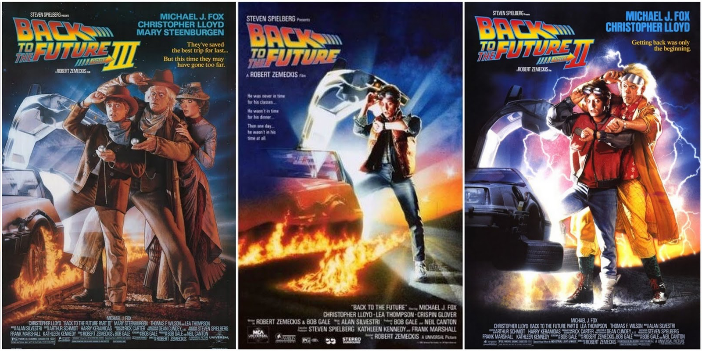
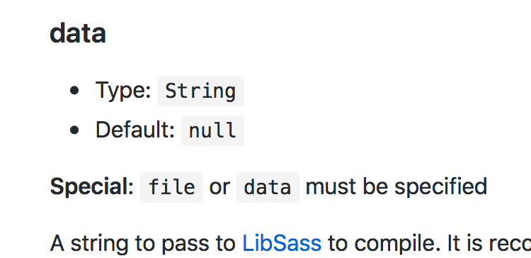
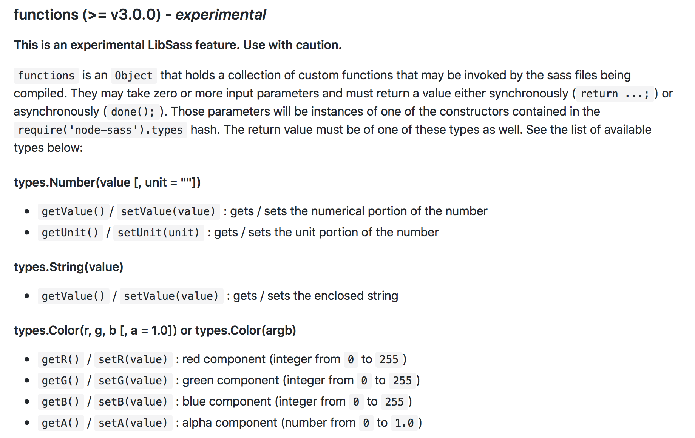
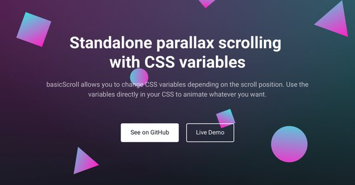
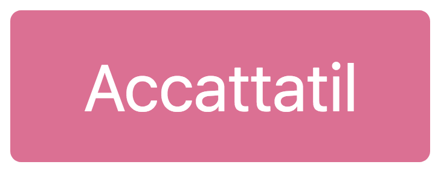
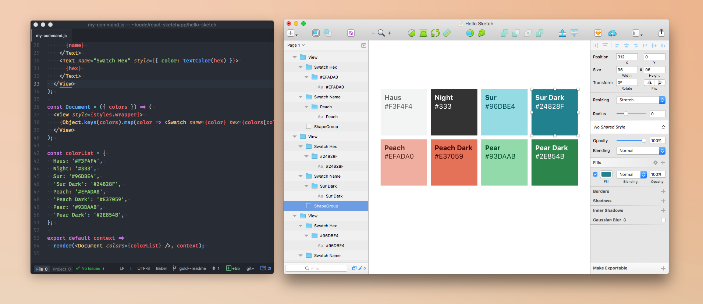
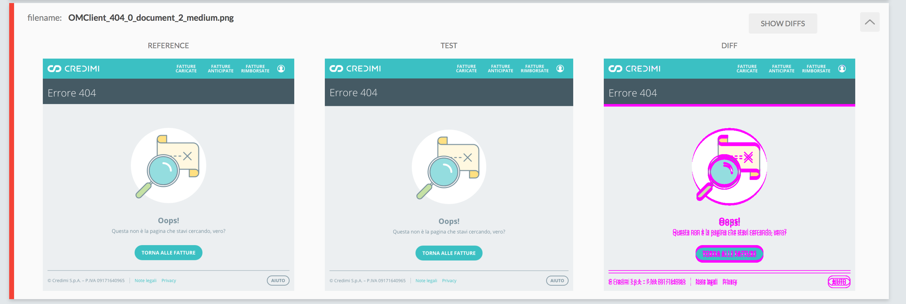
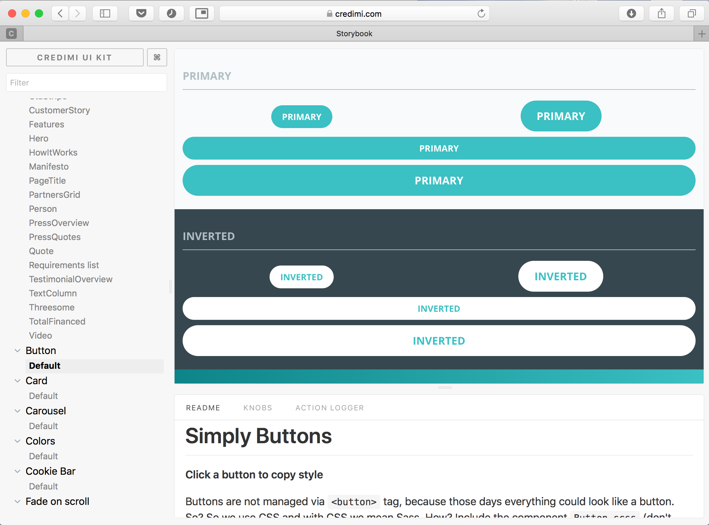
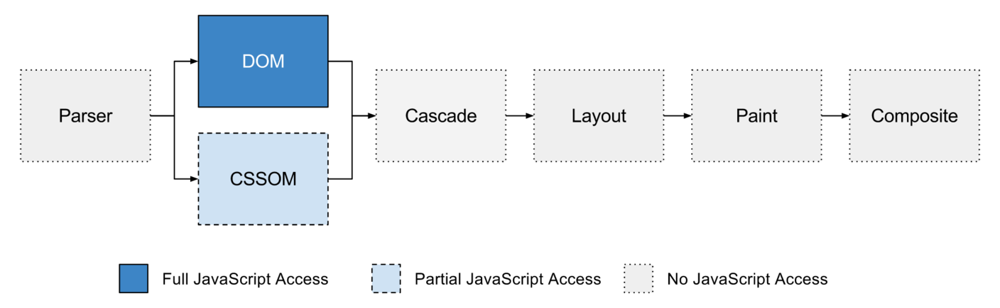

cambiato il CSS
Davide Di Pumpo

Let's start meaow
Il passato

<style type="text/javascript">
tags.H1.color = "red";
tags.p.fontSize = "20pt";
with (tags.H3) {
color = "green";
}
</style>

Grazie a Sass abbiamo avuto:
- Le variabili
- Le funzioni
- I mixin

Con Sass eravamo dipendenti da Ruby
Poi, una notte di settembre mi svegliai
Era maggio 2009, ma volevo fare la citazione 🎤
Il presente
Any application that can be written in JavaScript, will eventually be written in JavaScript.
Atwood's Law
Per risolverci qualche problema
Scoping
.title {
color: red;
}
.title {
color: green;
}
.title {
color: blue;
}
BEM, SMACSS, ecc... ecc...
Gentlemen's agreement
├── Accordion
│ ├── Accordion.html
│ └── Accordion.module.css
├── BadgeStep
│ ├── BadgeStep.html
│ └── BadgeStep.module.css
└── BlogPosts
├── BlogPosts.html
└── BlogPosts.module.css
/* Accordion.module.css */
.title { color: green; }
/* BadgeStep.module.css */
.title { color: green; }
/* BlogPosts.module.css */
.title { color: green; }

/* Accordion.css */
.Accordion--title--axYow2l { color: green; }
/* BadgeStep.css */
.BadgeStep--title--9scas2 { color: green; }
/* BlogPosts.css */
.BlogPosts--title--Fsvloa { color: green; }
postcss-modules
js
import styles from "./component.module.css";
element.innerHTML =
`<div class="${style.title}">postcss-modules</div>`;
pug
h1(class=css.title) postcss-modules
- No global scope
- Niente conflitti
- Dipendenze esplicite
E i web components?
Aspettiamo Max tra qualche decina di minuti 😉Condividere
Tipo tra Sass e JS
$breakpoints: (
small: 640,
medium: 720,
large: 1024
);
Come accedere a queste property nel DOM?
- Non renderizzare intere porzioni di codice
- Utilizzare element query
- Far partire o meno chiamate ajax
$breakpoints: (
small: 640,
medium: 720,
large: 1024
);
export default {
small: 640,
medium: 720,
large: 1024
}
import breakpoints from "./breakpoints.js"

import breakpoints from "./design/breakpoints"
/*...*/
loader: "sass-loader",
options: {
data: `$breakpoints: ${breakpoints}`
}
import breakpoints from "./design/breakpoints"
import flattenObjSass from "js-to-scss"
/*...*/
loader: "sass-loader",
options: {
data: `$breakpoints:
${flattenObjSass(breakpoints)}`
}

'env-map($env-sass-map-name, $map: ())':
function (envSassMapName, map) {
if (!env.sass[envSassMapName.getValue()]) {
env.sass[envSassMapName.getValue()] =
new nodeSass.types.Map(0);
}
if (map.getLength()) {
env.sass[envSassMapName.getValue()] = map;
}
return env.sass[envSassMapName.getValue()];
}
E con altri processori CSS?
macropodhq/postcss-constants
Ok, un gattino per riavere l'attenzione:

Condividere a runtime
Element.style.left = "42px";
Ancora più facile grazie alle custom properties
aka CSS variables
Element.style.setProperty(
`--custom`, '42px'
)
See the Pen Mouse cursor gradient tracking CSS variables + Javascript vanilla by Davide Di Pumpo (@MakhBeth) on CodePen.

Codice ripetuto
.square {
height: 10px;
width: 10px;
}
// Sass
.square {
@include square(10px);
}
// PostCSS
.square {
@mixin square 10px;
}
.square2 {
size: 10px;
}
module.exports = (mixinNode, value) => {
return {
width: value,
height: value,
}
};
Perché PostCSS?
e non uno degli altri?TEST
import size from '../src/mixins/size.js';
test('Should return CSS rules', () => {
expect(size(null, '64px')).toEqual({
width: '64px',
height: '64px',
})
});
Anche Sass è testabile: TRUE
@include test-module('Zip [function]') {
@include test('Zips multiple lists into a single multi-dimensional list') {
// Assert the expected results
@include assert-equal(
zip(a b c, 1 2 3),
(a 1, b 2, c 3));
}
}
Componentizzare

<a href="#" class="btn btn-primary">
Accattatil
</a>
💅
<Button primary>
Accattatil
</Button>
const Button = styled.button`
background: ${props =>
props.primary
? 'palevioletred'
: 'white'
};
color: ${props => props.primary ? 'white' : 'palevioletred'};
font-size: 1em;
margin: 1em;
padding: 0.25em 1em;
border: 2px solid palevioletred;
border-radius: 3px;
`;
Perché non le classi?
meno spontanea di prima- Eliminano il global space
- Le dipendenze sono esplicite
- Condividere costanti è più facile
Ma per me il selling point è...
L'astrazione
???

Regression test
Cos'è?

BackstopJS
{
"id": "OM Client",
"viewports": [
{"label": "main", "width": 1366, "height": 768}
]
{
"label": "archive",
"url": "https://localhost:9000/archive",
"delay": 2000,
"hideSelectors": ["#loading-bar-new"],
"onBeforeScript": "helpers/localStorageOM.js"
}
}
module.exports = (chromy, scenario) => {
chromy
.wait('.ic-app')
.click('.introjs-skipbutton');
};

Il futuro
Web components
Project Houdini

CSS parser API
@apply o @extends a run time!CSS Layout API
It's alive... \o/
— Ian Kilpatrick (@bfgeek) March 7, 2018
(the CSS Layout API that is - not in canary yet, local build atm). pic.twitter.com/ZydYAnDFaI
CSS Paint API
Per farla breve una sorta di Canvas
.bubble {
background: paint('circle');
}
Quindi?
Usiamo da anni tool per migliorare il nostro CSS
JS è già nella nostra build chain, usiamolo a nostro vantaggio
Per risolvere alcuni problemi che possiamo avere con CSSDai raga, tutte ste possibilità sono una figata 😃
Grazie

Davide Di Pumpo
- Technology - Credimi
- Co-organizer Milano Frontend
- MakhBeth on: Twitter, Github, Internet
- I like Cats, Drink, Comics and Videogames...